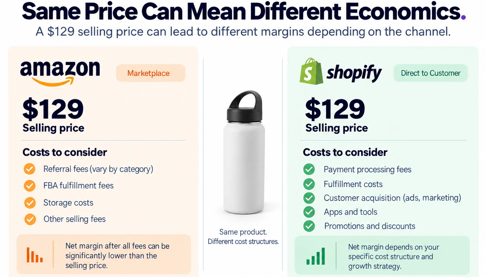
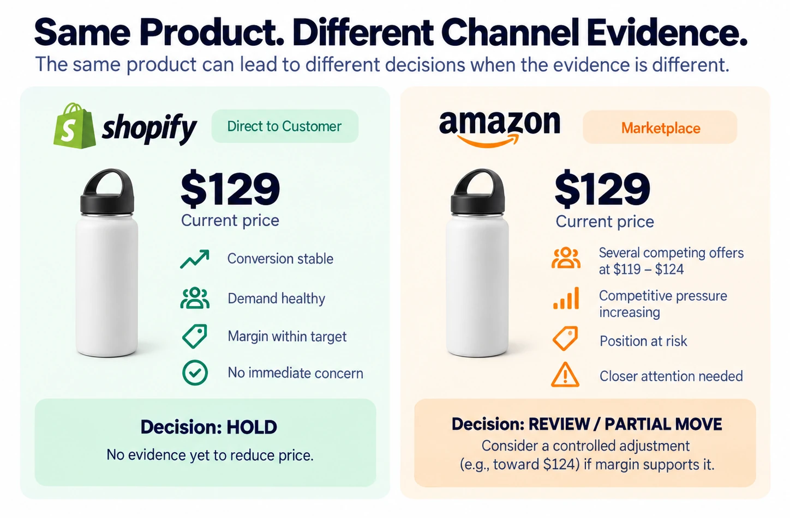
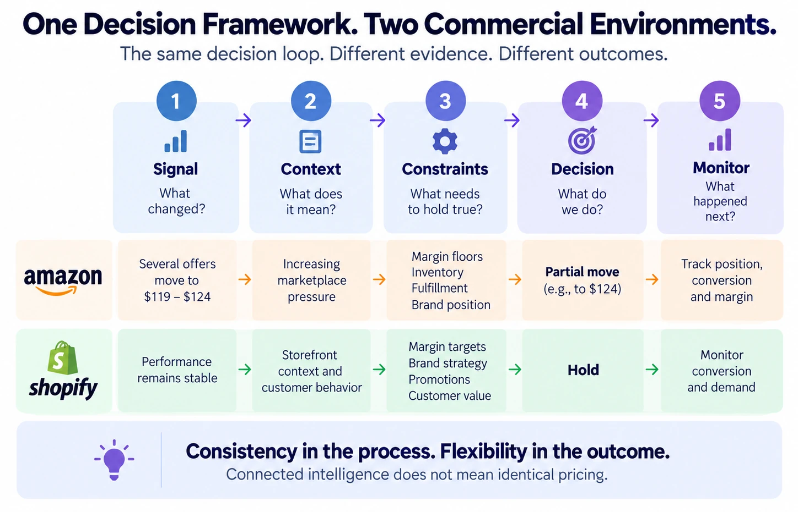

Nermin Sad · CEO & Co-founder
Nermin Sad · CEO & Co-founderImagine you sell the same product on Amazon and Shopify.
Same product. Same brand. Same cost. Same inventory sitting behind it.
And today, it is priced at $129 on both channels.
Then something changes.
On Amazon, several competing offers move down into the $119-$124 range. On Shopify, nothing obvious happens. Conversion is holding. Customers are still buying. Your margin is where you expect it to be.
So now what?
Do you lower the Amazon price? Do you change Shopify too, just to keep both channels aligned? Or do you leave both alone?
This sounds like a pricing question. But I think it is really a decision-context question.
Because once a business starts selling the same products across different channels, one assumption becomes surprisingly easy to make:
If the product is the same, the pricing decision should be the same.
It sounds tidy. Commercially, it does not always make sense.
The way we think about it at Pricenaux is:
Connected intelligence does not mean identical pricing.
It means understanding the same product across channels while still respecting the evidence, economics and competitive environment of each one.
1. The same product can live in two very different markets
Amazon and Shopify may both end with a customer clicking "Buy," but what happens before that click can be very different.
On Amazon, your offer can sit beside other sellers competing around the same product. Shopify's Marketplace Connect documentation distinguishes between the shared Amazon Listing and each seller's individual Offer, with seller-specific information such as price, inventory and fulfillment attached to the Offer.
That distinction matters. You are not simply asking: What should this product cost? You may also be asking: How is my offer positioned against the other offers around it?
And Amazon's Featured Offer adds another layer. In July 2026, Amazon began removing the separate seller-eligibility step for the Featured Offer, with a global rollout scheduled through the end of 2026. Amazon says the Featured Offer selection process itself is not changing and continues to consider factors such as competitive pricing, delivery speed and performance.
That does not mean "lowest price wins." And it certainly does not mean every competitor move deserves a response. But it does mean the Amazon environment can generate a lot of pricing signals very quickly.
Shopify is different. You control the storefront. You control how the product is presented. You may be running your own promotions, bundles, loyalty offers or acquisition campaigns. And the customer is not necessarily comparing your offer against several sellers on the same product page at the exact moment of purchase.
That changes the evidence available to you. Shopify's own pricing guidance encourages merchants to consider costs, profitability, competitor pricing, customer expectations and the product's value proposition when setting and adjusting prices.
Same item. Different environment. That alone should make us cautious about assuming both channels must always produce the same pricing decision.
2. A competitor moved on Amazon. Does Shopify need to care?
Suppose one competitor drops from $129 to $119. That is easy to see. It is also easy to react to.
But as we discussed in "Your Competitor Just Cut Their Price. Should You Follow?", a competitor's price change is a signal. It is not an instruction.
Now add the multichannel question. If that signal appeared on Amazon, should it automatically trigger a Shopify price change too?
Usually, I think there is a better question: What does this Amazon change tell us about the market, and is there evidence that it matters to Shopify as well?
Maybe the competitor is discounting temporarily. Maybe several competitors are moving together. Maybe the product category is becoming more aggressive. Maybe your Amazon position is weakening while Shopify performance remains completely healthy. Or maybe the Amazon movement is the beginning of a broader market shift that will eventually matter across channels.
This is where connected intelligence becomes useful. A signal from one channel can become context for another without becoming an automatic command.
That distinction is important. Otherwise multichannel pricing becomes little more than synchronization. And synchronization is not the same thing as intelligence.
3. The Shopify side may be telling you something completely different
Now look at the Shopify version of the same product. Suppose it is still selling at $129. Conversion is stable. Margin is healthy. There has been no unusual change in demand. Customers are not showing obvious resistance to the current price.
Should Amazon's $119 competitor suddenly make your Shopify price wrong? Not necessarily.
Your Shopify decision may have its own evidence. What is happening to conversion? How profitable is the product after customer acquisition and fulfillment? Are you running a promotion? Is this one of your stronger products? Are customers buying because of the product alone, or because of your brand, service, bundles, content or experience?
The answer does not have to be the same as Amazon's answer. That is not inconsistency. It may simply be the result of looking at the product in context.
4. Same selling price does not necessarily mean same economics
There is another reason I would be careful about forcing price alignment across channels: a $129 selling price does not automatically mean the same $129 economics.
On Amazon, referral fees vary by product category. Sellers using FBA can also face fulfillment and storage costs in addition to standard selling fees.
A Shopify transaction has a different economic structure. The merchant may be thinking about payment processing, fulfillment, customer acquisition, apps, promotions and other costs that do not line up neatly with Amazon's cost structure.
So even before we talk about competitors, the margin behind the same displayed price can be different.
This is why I prefer thinking in terms of shared commercial guardrails rather than forced price equality. The business can still have common goals: protect margin, stay competitive, support conversion, avoid unnecessary discounting, and preserve the brand's positioning. But the route to those goals can differ by channel.
And, of course, channel-specific pricing still needs to respect any relevant brand policies, marketplace requirements, contractual commitments and customer expectations. Different does not mean uncontrolled. It means explainable.

Figure 3. Identical selling prices do not imply identical channel economics.
5. Same product. Same trigger. Different decision.
Consider a simplified example. This is entirely illustrative; it is not customer data.
| Evidence | Shopify | Amazon |
|---|---|---|
| Current price | $129 | $129 |
| Market evidence | Stable | Several offers at $119-$124 |
| Product performance | Healthy | Competitive pressure increasing |
| Margin | Within target | Within target |
| Immediate concern | Low | Higher |
| Possible decision | HOLD | REVIEW / CONTROLLED PARTIAL MOVE |
On Shopify, there may simply be no evidence yet that reducing the price is necessary. So the decision could be: Hold at $129.
On Amazon, the competitive environment has changed. That does not automatically justify matching $119. But it may justify looking more closely at the product and considering a controlled move - perhaps toward $124 - if the evidence and margin guardrails support it.
Those decisions are different. But the thinking behind them is not.
Consistency should live in the decision process, not necessarily in the final number.

Figure 1. The same product can justify different pricing decisions when the evidence around each channel is different.
6. One decision framework can still connect both channels
In Blog #6, we introduced a simple pricing decision loop:
Signal -> Context -> Constraints -> Decision -> Monitor
There is no reason to abandon that framework when a merchant adds another channel. What changes are the inputs.
On Amazon, the signal might be several competing offers moving down. The context might be increasing marketplace pressure. The constraints might include margin floors, inventory, fulfillment economics and brand position. The decision might be a partial move. Then you monitor what happens next.
On Shopify, the signal might be very different - or there may be no meaningful negative signal at all. Performance remains stable. Conversion is healthy. The product remains profitable. Your commercial constraints still matter. But the resulting decision could simply be: Hold.
Same loop. Different evidence. Different output.

Figure 2. A consistent decision framework can produce different outputs when Amazon and Shopify provide different evidence.
This also connects directly to the idea behind Product Market Health. As we explored in "Not Every Signal Deserves a Decision. Some Don't Even Deserve a Look.", Product Market Health helps answer: Does something happening around this product deserve closer attention? The decision loop answers the next question: Now that it has our attention, what should we actually do?
Those are related questions. They are not the same question.
7. The bigger risk may be disconnected decisions, not different prices
I think this is where the multichannel conversation becomes more interesting.
Imagine the Amazon team sees competitive pressure and moves the price. At the same time, the Shopify team sees stable conversion and leaves its price alone. Both teams may be making completely reasonable decisions.
The problem begins when neither side understands why the other did what it did.
Then the business sees Amazon: $124 and Shopify: $129, and someone asks: Why are these different?
If the answer is, "I'm not sure. That's just what each channel ended up doing," you have a problem.
But if the answer is, "Amazon competitive pressure increased, so we made a controlled adjustment within our margin guardrail. Shopify performance remained healthy, so we held," that is a very different situation.
Now the difference is intentional. It is explainable. And it can be monitored.
That is what I mean by connected intelligence. Not making everything look the same. Making sure the business understands why things are different when they are different.
8. Connected intelligence should coordinate, not flatten
As Pricenaux has evolved, this distinction has become increasingly important to how we think about multichannel pricing.
We want the product identity to connect. We want the commercial history to connect. We want the business to understand what is happening around the same product across Amazon and Shopify. But we do not want to pretend that every channel is experiencing the same market.
The goal is not: Amazon changed, therefore Shopify changes. Nor is it: Keep every channel completely independent.
Let each channel contribute evidence to one commercial picture, then make the decision that the evidence actually supports.
That is much closer to how merchants operate in the real world.
Founder Reflection
When we started thinking more deeply about connected Amazon and Shopify intelligence at Pricenaux, one assumption kept bothering me: Does connecting the channels mean we should try to make their prices match?
The more we worked through actual pricing situations, the less useful that assumption became.
What mattered more was whether we could explain the decision. Why did Amazon move? Why did Shopify hold? What changed? Which constraint mattered? What are we watching next?
For me, that became the more interesting problem. Not: "Are the prices identical?" but: "Are the decisions connected?" There is a big difference.
- Nermin Sad, CEO & Co-founder, Pricenaux
Final Thought
If you sell the same product on Amazon and Shopify, I would not begin with: Should these prices be the same?
Are we applying the same commercial discipline to the evidence each channel is giving us?
Sometimes that will lead to the same price. Sometimes it will not.
What matters is that the decision is intentional, explainable and economically grounded. Because connected commerce does not require identical decisions. It requires a business to understand how those decisions fit together.
Have a perspective on this topic?
Continue the discussion with Pricenaux and other operators on LinkedIn.
Join the LinkedIn Discussion